APPARATEKUNDE · WÄRMEAPPARATE · 30.10.2026
Wärme verstehen.
Geräte erklären.
Deine Semesterunterlagen als Theorie-Referenz für die Lehrabschlussprüfung: 11 Seiten, 10 Diagramme, alle handschriftlichen Antworten und die wichtigsten Korrekturen.
Apparatekunde — Wärmeapparate · Semesterübersicht für die LAP
Stand: 30.10.2026 · ABT · 2. Lehrjahr, 3. Semester · Grundlage: die 11 zugesandten Seiten 5.1–5.11 aus BAP, Elektrotechnik für Elektroberufe, Band 1, Auflage 2021.
Diese Sammlung ist dein langfristiger Theoriebaustein für die Lehrabschlussprüfung. Sie deckt die vorliegenden Wärmeapparate-Seiten ab; sie ist kein vollständiger offizieller LAP-Stoffkatalog. Geräte verstehen, Bauteile benennen, Wirkprinzipien vergleichen und Zahlen richtig einordnen stehen im Vordergrund.
Das Wichtigste zuerst
- Wärmeleitung, Konvektion und Wärmestrahlung unterscheiden. Bei einem Gerät wirken oft mehrere gleichzeitig: Beim Backofen strahlen Heizkörper, Luft transportiert Wärme und das Blech leitet sie.
- Leistungssteuerung ist keine Temperaturregelung. Energieregler dosieren die Einschaltdauer. Ein Temperaturregler erfasst eine Temperatur und beeinflusst die Heizung abhängig vom Sollwert.
- Massekochplatte, Strahlungskochfeld und Induktion erklären. Wo entsteht Wärme, wie gelangt sie zum Essen, welches Geschirr ist geeignet?
- Den Einfluss von Reihen- und Parallelschaltung verstehen. Bei Stufe 1 des gezeigten 7-Taktschalters liegen alle drei Heizleiter in Serie, bei Stufe 6 parallel. Die Zwischenstufen bleiben im Originalschaltbild erhalten.
- Backofen, Steamer und Mikrowelle nach ihrem Wirkprinzip vergleichen. Strahlung/heisse Luft, kondensierender Dampf oder elektromagnetische Energie im Lebensmittel.
- Leistung, Temperatur und Energie nicht verwechseln. kW bezeichnet Leistung; kWh Energie; °C Temperatur. Aus Leistung allein folgt keine feste Temperatur.
- Die handschriftlichen Antworten prüfen. Besonders die Kochfeldsumme und pauschale Aussagen zur Mikrowelle nicht ungeprüft lernen.
1 · Wärmeübertragung und elektrische Heizgeräte
| Vorgang | Was wird transportiert? | Typisches Beispiel |
|---|---|---|
| Wärmeleitung | Energie durch Wechselwirkung im Stoff; kein makroskopischer Stoffstrom nötig | Kochplatte → Pfannenboden; erwärmter Metallstab |
| Konvektion | Wärme mit bewegter Flüssigkeit oder bewegtem Gas | Warme Luft im Raum, Umluftbackofen, Konvektor |
| Wärmestrahlung | Energie durch elektromagnetische Strahlung | Grillwendel, Infrarotstrahler, Sonne |
Speicherheizung: Wärme wird zuerst in einem Speichermaterial (im Blatt Magnesitsteine) gespeichert und zeitversetzt abgegeben. Statisch: Strahlung und natürliche Konvektion. Dynamisch: zusätzliche Luftförderung durch einen Lüfter. Nachtladung und Niedertarif sind die im Lehrmittel beschriebene Betriebsweise.
Direktheizung: Wärmeabgabe erfolgt während der elektrischen Wärmeerzeugung. Beispiele: Infrarotstrahler, Niedertemperaturstrahler, Konvektoren. Ein Konvektor erwärmt die Luft; ein Infrarotstrahler wirkt vor allem über Strahlung.
Ergänzung zur leeren Übung 2.2: Infrarotstrahler eignen sich beispielsweise für gezielte Wärme an einem Aufenthalts- oder Arbeitsplatz. Konkrete Geräte müssen für den vorgesehenen Einsatz geeignet sein. Diese Antwort ist ergänzt, nicht handschriftlich vorhanden.
2 · Kochplatten und Kochfelder
| System | Wärmeerzeugung / Übertragung | Merken |
|---|---|---|
| Normalkochplatte | NiCr-Heizleiter in keramischer Isolation erwärmen die Gussplatte; diese leitet Wärme zum Topf | Drei unterschiedlich leistungsstarke Heizleiter, träge, Restwärme |
| Blitzkochplatte | Aufbau ähnlich, höhere Leistung | Roter Punkt; Bimetall-Protektor schaltet bei Überhitzung einen Heizleiter ab |
| Automatikkochplatte | Heizkörper werden abhängig vom Fühler am Pfannenboden geschaltet | Fühler in unbeheizter Mittelzone; echte Temperaturerfassung |
| Glaskeramik mit Strahlungsheizkörper | Heizwendel unter der Platte; Strahlung/Wärmeleitung zum Topf | Ein-/Zweikreis; Restwärmeanzeige und Überhitzungsschutz unterscheiden |
| Induktion | Spule → magnetisches Wechselfeld → Ströme/Verluste im geeigneten Topfboden | Wärme entsteht im Topfboden; Platte kann durch den Topf trotzdem heiss werden |
Induktionsgeschirr: Entscheidend ist ein geeigneter ferromagnetischer Boden. Auch mehrschichtiges Geschirr kann geeignet sein. Der Magnettest ist eine erste Orientierung; Herstellerkennzeichnung und passende Bodengrösse beachten. Die handschriftliche Antwort «nur Stahl oder Gusseisen» ist dafür zu eng formuliert. Bosch: geeignetes Induktionsgeschirr
Restwärme: «Kaltes Kochfeld» in der Tabelle ist relativ gemeint. Der heisse Topf überträgt Wärme auf die Glaskeramik. Bosch: Induktion und Restwärme
Leistungswerte aus den ausgefüllten Blättern
| Durchmesser | Normalkochplatte | Blitzkochplatte |
|---|---|---|
| 14,5 cm | 1000 W | 1500 W |
| 18 cm | 1500 W | 2000 W |
| 22 cm | 2000 W | 2600 W |
| Glaskeramikzone | Kleiner Kreis / kleine Stufe | Ganze Zone maximal |
|---|---|---|
| 14,5 cm, Einkreis | — | 1200 W |
| 18 cm, Einkreis | — | 1800 W |
| 12/18 cm, Zweikreis | 900 W | 1800 W |
| 14/21 cm, Zweikreis | 1400 W | 2300 W |
Korrektur Übung 5.2: 1200 + 1800 + 1800 + 2300 = 7100 W = 7,1 kW. Die Handschrift nennt 8,1 kW. Die kleine und grosse Leistungsangabe einer Zweikreiszone werden nicht beide addiert: Der grosse Wert beschreibt die eingeschaltete ganze Zone.
Vergleich des Energieverbrauchs
Lehrmitteltabelle: Massekochplatte 120 %, Glaskeramik 100 %, Induktion 80 %. Das sind relative Vergleichswerte unter nicht weiter angegebenen Bedingungen, keine Wirkungsgrade. Gegenüber der Referenz sind 80 % ein um 20 % kleinerer Verbrauch. Keine Garantie für jedes Gerät oder jeden Kochvorgang.
3 · Energieregler und Temperaturregler
Energie durch Zeit dosieren
Ein mechanischer Energieregler schaltet zeitweise volle Heizleistung ein und dazwischen aus. Die mittlere Leistung ergibt sich aus dem Einschaltanteil:
P̄ = Pmax × t_ein / T
Beispiel zum Diagramm: T = 20 s und Einschaltanteil 13 % → t_ein = 2,6 s. Bei Pmax = 2000 W ergibt sich P̄ = 260 W. Das ist ein didaktisch aus den Blattwerten gerechnetes Beispiel, kein zusätzlich abgelesener Gerätewert.
Das intern beheizte Bimetall des Energiereglers bestimmt die Schaltzeit. Es ist nicht mit einem Fühler für die tatsächliche Pfannen- oder Garguttemperatur gleichzusetzen. Ein elektronischer Energieregler kann Schaltzeiten feiner programmieren; elektronisch bedeutet noch nicht automatisch Temperaturregelung.
Einkreis/Zweikreis: Der Regler muss zum Heizkörper passen. Ein Zweikreisheizkörper braucht einen Regler mit passender Zweikreisfunktion (Übung 8.1).
Temperatur erfassen und nachregeln
Beim beschriebenen Flüssigkeitsausdehnungsregler: Fühler erwärmt sich → Füllmedium dehnt sich aus → Druck über Kapillarrohr → Membran bewegt sich → Kontakt schaltet. Die Einstellung verschiebt den Schaltpunkt. Die reale Temperatur beeinflusst damit wieder die Heizleistung.
Nicht verwechseln:
- Energieregler: zeitliche Dosierung der Energie.
- Temperaturregler: Schalten nach erfasster Temperatur.
- Überhitzungsschutz: begrenzt eine unzulässig hohe Temperatur.
- Restwärmeanzeige: zeigt einen noch warmen Bereich an.
4 · Backofen
| Betriebsart | Wirkprinzip | Typische Wirkung |
|---|---|---|
| Ober-/Unterhitze | Obere und untere Heizkörper; Strahlung und natürliche Konvektion | Klassisches Backen, im Blatt eine Ebene |
| Umluft | Ventilator unterstützt die Verteilung der von den Heizkörpern erzeugten Wärme | Gleichmässigere Luftverteilung |
| Heissluft | Bei üblichen Geräten Luftheizung am rückwärtigen Ringheizkörper und Ventilator | Mehrere Ebenen möglich; geräteabhängig |
| Grill | Intensive Strahlung der oberen Heizwendel | Oberflächenbräunung |
Der Ringheizkörper ist eine fachliche Ergänzung zur knappen Darstellung auf S. 5.9; die konkrete Ausstattung steht in der Geräteanleitung. NEFF: Betriebsarten und Ringheizkörper
Temperaturregelung: Fühler bzw. temperaturabhängiger Widerstand erfasst die Temperatur; die Heizung wird abhängig vom Sollwert geschaltet. Die Anschlussleistung 3–4 kW ist die notierte Grössenordnung, kein universeller Wert.
Pyrolyse: Sehr hohe Temperatur (Blatt: etwa 500 °C), Speisereste werden abgebaut; Türverriegelung. Katalyse: Spezielle Beschichtung unterstützt den Abbau von Verschmutzung bei niedrigeren Temperaturen (Blatt: 150–250 °C). Dauer, erreichbare Temperaturen und Ausstattung sind geräteabhängig; «vier Stunden» ist keine allgemeingültige Vorgabe.
5 · Steamer
Die vorliegende Seite beschreibt einen Kombi-Steamer: Dämpfen und Heissluft können kombiniert werden. Ein reiner Dampfgarer muss keine Backofen-/Heissluftfunktion besitzen.
Warum Dampf? Kondensierender Dampf überträgt Wärme auf das kühlere Gargut. Gegenüber dem Kochen in viel Wasser kann die Auslaugung wasserlöslicher Inhaltsstoffe geringer ausfallen; das Ergebnis hängt auch von Zeit und Lebensmittel ab. Die Handschrift nennt geringere Nährstoff- und Vitaminverluste.
| System | Wo entsteht der Dampf? | Weg zum Gargut |
|---|---|---|
| Boilersystem | Separater Dampferzeuger | Dampf wird in den Garraum geleitet |
| Einspritzsystem (Blatt) | Im Garraum am Heizkörper im Lüfterbereich | Wasser verdampft im Garraum |
Im Blatt: Dämpfen typisch 100 °C; Heissluft je nach Hersteller 30–300 °C. Wasser kommt aus Anschluss oder Tank. Ablauf, Entleerung und elektrischer Anschluss richten sich nach der konkreten Bauart. «Teilweise Drehstrom» ist kein Anschlussplan.
6 · Mikrowelle
Funktionskette: Netzgerät → Magnetron → Hohlleiter → Garraum → Energieaufnahme im Lebensmittel. Metallwände reflektieren; Wellenrührer bzw. geeignete Verteilmechanismen unterstützen eine gleichmässigere Verteilung. Türverriegelung und Sicherheitsschalter gehören zum Geräteaufbau.
Das wechselnde elektrische Feld wirkt auf polare Moleküle und geladene Bestandteile. Energieaufnahme führt zur Erwärmung. Das Bild von «reibenden Molekülen» ist eine vereinfachte Unterrichtserklärung. Wärmeleitung verteilt die entstandene Wärme im Lebensmittel weiter; eine Mikrowelle heizt nicht einfach alles gleichmässig «von innen nach aussen». FDA: Funktionsweise von Mikrowellen
Geschirr: Nur als mikrowellengeeignet gekennzeichnetes Geschirr verwenden. «Glas, Kunststoff, Keramik» allein garantiert die Eignung nicht. USDA: mikrowellengeeignete Utensilien
Frequenz und Eindringtiefe: Die Handschrift nennt 2450 MHz = 2,45 GHz. Die folgende Angabe sieht nach 6 cm aus; ihre Lesung ist unsicher. Sie wird nicht als fester allgemeiner Lernwert übernommen. Eindringtiefe hängt unter anderem von Zusammensetzung und Temperatur des Lebensmittels ab; sie ist nicht identisch mit der Wellenlänge.
Bräunung/Backen: Einer reinen Mikrowelle fehlt typischerweise die intensive trockene Oberflächenbeheizung für eine klassische Kruste. Ein Kombigerät ergänzt Grill/Heissluft. Die handschriftliche Erklärung «Wasser nur bis 100 °C» ist dafür zu pauschal; sie beschreibt keine allgemeine Temperaturgrenze aller Lebensmittel.
Zahlen mit Quellenstatus
| Wert | Bedeutung | Status |
|---|---|---|
| 300–400 °C | Oberfläche Normalkochplatte | Lehrmittel, Grössenordnung |
| über 50 °C | Restwärmeanzeige Glaskeramik | Angabe dieses Lehrmittels |
| ca. 550 °C | Überhitzungsschutz Strahlungsheizkörper | Angabe dieses Lehrmittels |
| 25 kHz | Induktions-Wechselfeld | Lehrmittelbeispiel, nicht jede Gerätekonstruktion |
| ca. 20 s | Energieregler-Schaltperiode | Lehrmittelbeispiel |
| ca. 13 % | Einschaltanteil im P-t-Diagramm | Lehrmittelbeispiel |
| 3–4 kW | Anschlussleistung Backofen | Handschrift, Richtgrösse |
| 20–30 °C weniger | Heissluft gegenüber konventionell | Lehrmittelrichtwert, Rezept/Gerät beachten |
| ca. 500 °C | Pyrolyse | Lehrmittelrichtwert |
| 150–250 °C | Katalytische Reinigung | Lehrmittelrichtwert |
| typisch 100 °C | Dämpfen | Lehrmittelangabe |
| 2450 MHz | Mikrowelle | Handschrift; 2,45 GHz |
| «6 cm» | Mikrowellen-Eindringtiefe | Lesung unsicher; nicht pauschal auswendig lernen |
Wie du diese Theorie für die LAP nutzt
Erkläre zu jedem Gerät den Energiepfad, die Bauteile und die Regelung. Begründe den Unterschied zu einem ähnlichen Gerät. Rechne die Kochfeldleistung und die mittlere Leistung eines getakteten Heizkörpers mit Einheiten nach. Bei Herstellerwerten zwischen Lehrmittelbeispiel und konkretem Typenschild unterscheiden. Das sind abgeleitete Lernprioritäten aus diesen Seiten, keine Behauptung über sichere Prüfungsfragen.
Die Prinzipien als Bild
Auf schmalen Bildschirmen lassen sich die Diagramme horizontal verschieben. Alle Abbildungen können auch einzeln geöffnet werden. Feine Originalschaltbilder findest du bei den zugehörigen Seiten.
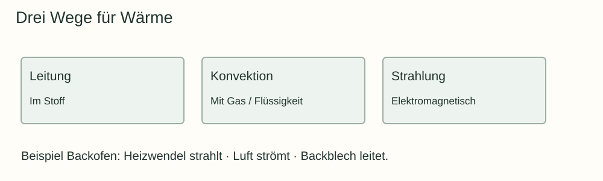
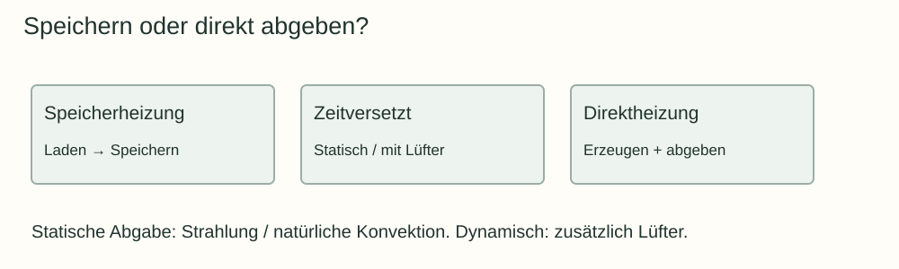
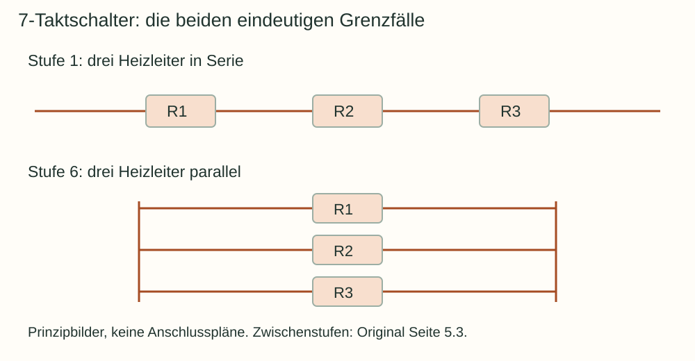
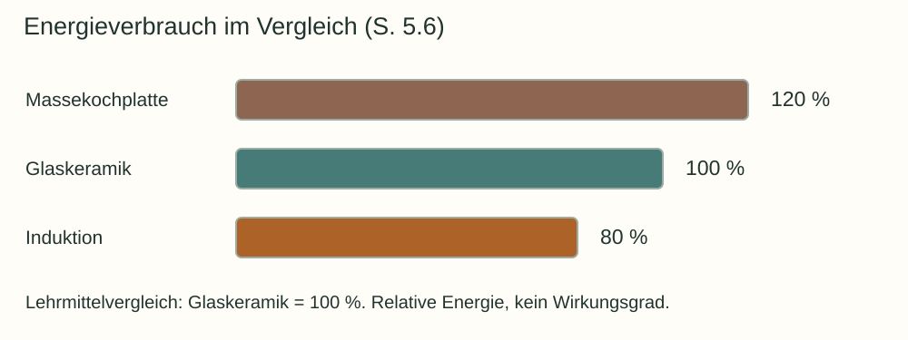
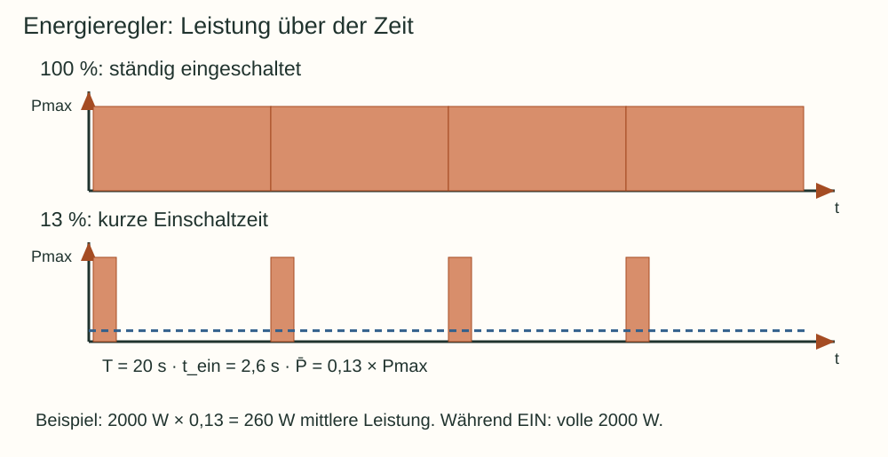
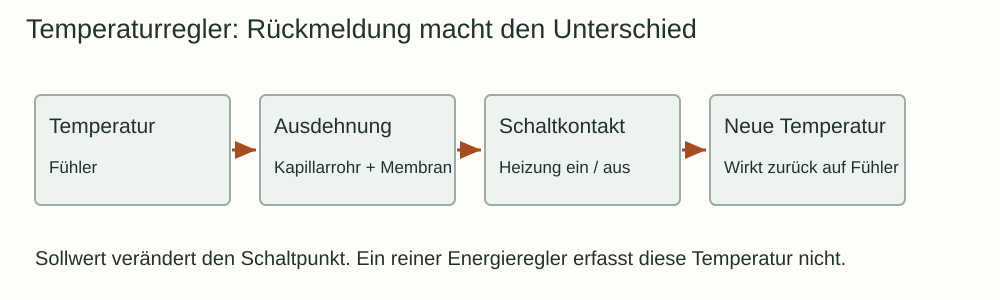
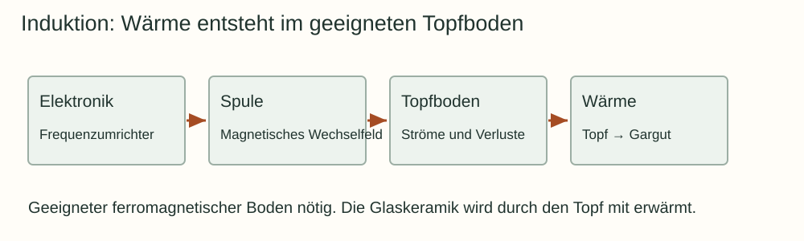
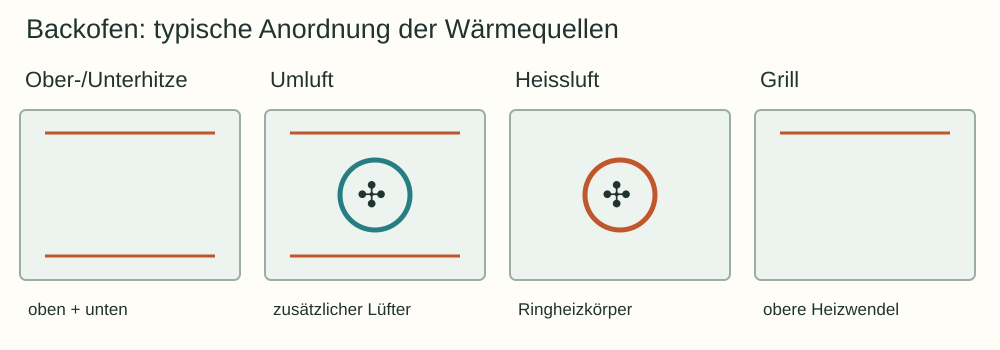
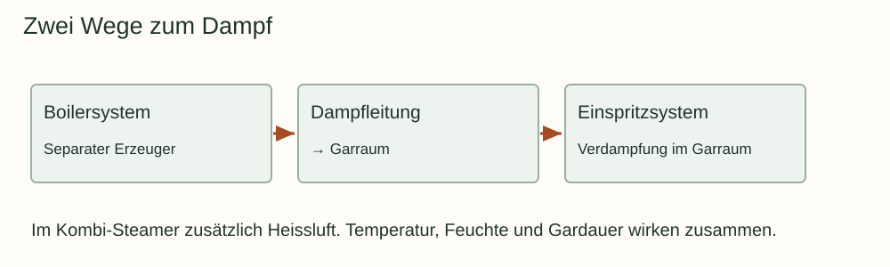
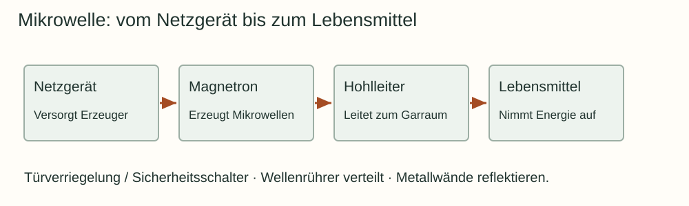
Transkript & Originalseiten
Gedruckter Text und Handschrift sind getrennt. Unklare Wörter stehen in eckigen Klammern. Wiederholte Kopf-/Fusszeilen: Elektrotechnik · Kapitel 5 Wärmeapparate · © BAP · Band 1 / Auflage 2021 · Elektrotechnik für Elektroberufe.
Seite 5.1 · Elektrische Heizsysteme
Seite 5.1 — Elektrische Heizsysteme
5.1 Elektrische Heizsysteme
5.1.1 Wärmeübertragungsarten
Wärmeenergie kann auf drei Arten übertragen werden.
Übung 1.1: Wie heissen diese drei Wärmeübertragungsarten?
Handschrift: Wärmeleitung, Konvektion, Wärmestrahlung.
Wärmeleitung
Bei dieser Art von Energietransport spielt die Wechselwirkung von Atomen und Molekülen eine entscheidende Rolle. Wird beispielsweise ein Metallstab an einem Ende erwärmt, dann schwingen die Atome hier stärker, also mit höherer Energie, als am kälteren Ende des Stabes. Durch Stösse mit den jeweils benachbarten Atomen wird die Wärmeenergie allmählich durch den Stab geleitet, wobei jedes Atom an seinem Platz bleibt.
Abbildung: Waagerechter Metallstab, links über einer Flamme rot/heiss, rechts blau/kalt.
Übung 1.2: Nennen Sie einige Beispiele, wo eine Wärmeleitung stattfindet.
Handschrift: Lötkolben. [Lesung wahrscheinlich; Schrift nicht ganz eindeutig.]
Konvektion (Wärmeströmung)
Wärmeströmung kann nur zwischen Flüssigkeiten oder zwischen Gasen entstehen. Wird die Luft in einem Zimmer an einem Heizkörper erwärmt, dann nimmt ihr Volumen zu und die Dichte ab; dadurch steigt sie auf und nimmt die aufgenommene Wärme mit nach oben. Die Konvektion lässt sich verhindern, indem ein fester Gegenstand die Wärmeströmung unterbricht. Ein gutes Beispiel dafür ist das Fenster, das man schliessen kann, damit im Winter die Wärme nicht verloren geht.
Abbildung: Raum mit Heizkörper/Fenster; roter Pfeil steigt auf, blaue Pfeile zeigen die Rückströmung.
Übung 1.3: Bei welchen Geräten wird die Wärmeübertragung mittels Konvektion ausgenutzt?
Handschrift: Umluftbackofen, Heizlüfter, Heizofen usw.
Wärmestrahlung
Bei der Wärmestrahlung wird die Wärme durch elektromagnetische Wellen übertragen. Als Wärmestrahlung bezeichnet man die elektromagnetischen Wellen im infraroten Bereich. Die Wärmestrahlung wird im Elektrobereich verschiedenartig ausgenützt. Der PIR-Melder beispielsweise reagiert auf Infrarotstrahlung. Mit Wärmebildkameras lassen sich verschiedene Fehler in einer Installation ausfindig machen. Auf der Abbildung rechts sehen Sie ein Schütz, das sich sehr stark erwärmt hat. Hier könnte eine Brandgefahr vorhanden sein, da Kontaktprobleme vorliegen oder die Stromstärke zu gross ist.
Abbildung: Wärmebild eines elektrischen Bauteils mit hellen/warmen Kontaktstellen.
Übung 1.4: Nennen Sie einige Beispiele, wo Wärmestrahlung vorhanden ist.
Handschrift: Lampe, Toaster, Sonne, Feuer[ofen?]. [Letztes Wort nicht eindeutig.]
Randnotizen: Kleine Initialen/Kritzeleien oberhalb des Titels; ohne erkennbare fachliche Aussage.
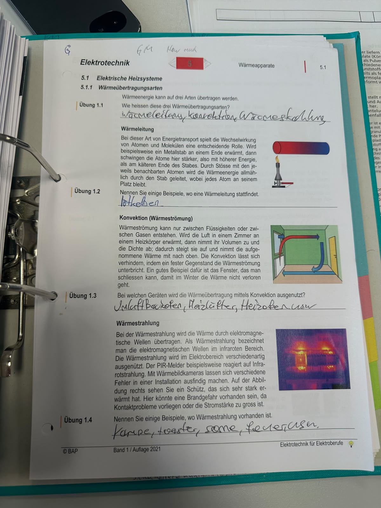
Seite 5.2 · Elektrische Heizgeräte
Seite 5.2 — Elektrische Heizgeräte
5.1.2 Elektrische Heizgeräte
Bei den elektrischen Heizsystemen wird zwischen Speicher- und Direktheizgeräten unterschieden.
Speicherheizgeräte
Bei Speicherheizgeräten wird die Wärmeenergie, wie es der Name sagt, gespeichert. D. h., die Wärme muss nicht zu dem Zeitpunkt genutzt werden, wo sie erzeugt wurde.
Speicherheizungen sind heute veraltet. Trotzdem stehen immer noch solche Heizsysteme in älteren Gebäuden im Einsatz. Sie wurden in den 1950er und 1960er Jahren als Alternative zu Kohle- und Ölöfen verstanden und erzielten einen Heizkomfort wie bei einer Öl- oder Gaszentralheizung.
Speicherheizgeräte werden während der Nacht aufgeheizt um die elektrische Energie im Niedertarifzeitraum zu nutzen.
Als Wärmespeicher werden Magnesitsteine verwendet. Die Raumluft wird durch einen Lüfter angesaugt, durch die erhitzten Steine geführt und durch Strahlung und Konvektion an den Raum abgegeben. In der Übergangszeit kann, in Abhängigkeit von der Qualität der Speicherisolierung, die allein durch Strahlung abgegebene Wärme zu gross sein. Um ein Überheizen des Raumes zu vermeiden, erfolgt vielfach eine zeitliche Begrenzung der Speicherladezeit. Meist wird diese Begrenzung durch Aussentemperatur- und Restwärmefühler gesteuert.
Bildbeschriftung: Dynamisches Speicherheizgerät.
Übung 2.1: Was versteht man unter a) statischer und b) dynamischer Entladung bei Speicherheizungen?
Handschrift:
- a) Wärmeabgabe zufolge natürlicher Luftzirkulation, Strahlung. [Einzelne Wörter überlagert; sinngemäss lesbar.]
- b) Die Wärmeabgabe wird durch Lüfter verstärkt.
Direktheizgeräte
Bei Direktheizgeräten wird die Wärmeenergie immer genau dann abgegeben, wenn sie erzeugt wird. Zu den Direktheizgeräten gehören hauptsächlich die bekannten Infrarotstrahler. Diese Geräte haben meist einen schwenkbaren Reflektor, damit die Wärmestrahlung in die gewünschte Richtung gelenkt werden kann.
Bildbeschriftung: Infrarotstrahler.
Übung 2.2: Wo werden Infrarotstrahler eingesetzt?
Handschrift: Keine Antwort eingetragen.
Niedertemperaturstrahler sind Direktheizgeräte mit relativ grossen Oberflächen. Sie werden als Wand- oder Radiatoröfen hergestellt.
Ebenfalls zu den Direktheizgeräten gehören Konvektoren. Die Konvektoren erwärmen die Luft, welche dadurch steigt und eine Zirkulation in Gang setzt. Aufbau-Konvektoren werden in Badezimmern als Zusatzheizung eingesetzt.
Die Aufbau-Konvektoren werden mit Leistungen bis 2 kW hergestellt.
Unterflur-Konvektoren, auch Bodenkonvektoren genannt, werden in Wohnräumen eingesetzt, wo die Fenster und Balkontüren bis zum Boden reichen.
Weitere Bildbeschriftungen: Niedertemperaturstrahler; Aufbau-Konvektoren für Bad; Unterflur-Konvektoren.
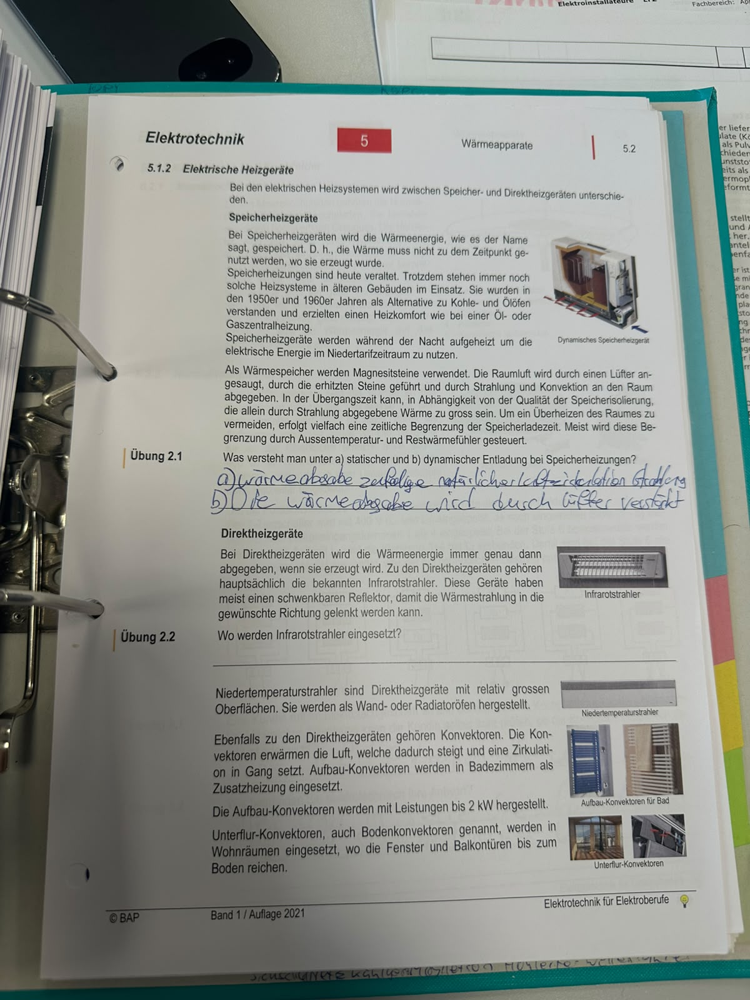
Seite 5.3 · Massekochplatten und Normalkochplatten
Seite 5.3 — Massekochplatten und Normalkochplatten
5.2 Kochplatten und Kochfelder
5.2.1 Massekochplatten
Zu den Massekochplatten gehören die Normal-, Blitz- und Automatikkochplatten. Sie bestehen aus einem hochwertigen Grauguss. Die Heizleiter sind aus einer Chrom-Nickel-Legierung aufgebaut. Die einzelnen Heizleiter (2–3 je nach Kochplattengrösse) sind in einer keramischen Isoliermasse eingebettet. Mit dieser Konstruktion wird ein guter Wirkungsgrad erreicht und vor allem erwärmt sich die Oberfläche der Kochplatte gleichmässig. Durch Wärmeleitung wird die Wärmeenergie auf das Kochgeschirr übertragen.
Abbildungslegende, Schnitt durch die Massekochplatte:
- Beheizter Plattenbereich
- Unbeheizter Plattenbereich
- Überfallrand
- Heizleiter
- Keramische Isoliermasse
5.2.2 Normalkochplatten
Durch Wärmeleitung wird die Wärme an das Kochgeschirr übertragen. Die Masse der Normalkochplatte wird klein gehalten, damit die Aufheizzeit möglichst gering ist. Die Temperatur an der Oberfläche erreicht etwa 300–400 °C. In Normalkochplatten werden heute praktisch immer drei in ihrer Leistung verschiedene Heizleiter eingebaut.
Bildbeschriftungen: Normalkochplatte; 7-Taktschalter.
Um die Funktionsweise zu verstehen, beachten Sie bitte die untere Abbildung. Der 7-Taktschalter wird mit 400 V (L₁ und L₂) eingespeist. Je nach eingestellter Stufe (1–6) werden die Kochplatteneingangsklemmen 1 bis 4 eingespeist. Bei der Stufe 6 beispielsweise werden die Klemmen 1+2 mit L₁ und die Klemmen 3+4 mit L₂ verbunden. Damit sind bei der Stufe 6 alle drei Heizleiter parallel geschaltet, was der höchstmöglichen Leistung entspricht.
Schaltbilder: Sechs Darstellungen «Stufe 1» bis «Stufe 6», jeweils mit R₁, R₂, R₃, Klemmen 1–4 und L₁/L₂. Stufe 1 zeigt die Serienschaltung aller drei Heizleiter; Stufe 6 die Parallelschaltung. Die kleinen Zwischenstufen sind im Foto für eine belastbare vollständige Verdrahtungsrekonstruktion zu fein. Sie werden nicht als geprüfter Anschlussplan nachgezeichnet; massgeblich bleibt das Originalbild.
Übung 3.1: Eine Kundin ruft im Elektrofachgeschäft an und behauptet, eine Kochplatte funktioniere nicht richtig. Mit welcher Anweisung kann die Kundin selber kurz prüfen, ob die Kochplatte tatsächlich defekt ist oder nicht?
Handschrift: Auf Stufe 1 sehen obs warm wird.
Übung 3.2: Wie begründen Sie elektrotechnisch Ihre Antwort?
Handschrift: Alle sind in Serie geschaltet wenn eines tot ist wird nichts warm.
Redaktionelle Abgrenzung: Das ist die wiedergegebene Übungsantwort, keine vollständige Fehlerdiagnose. Der Lernteil erklärt die Unterbrechung einer Serienschaltung ohne Reparatur- oder Anschlussanleitung.
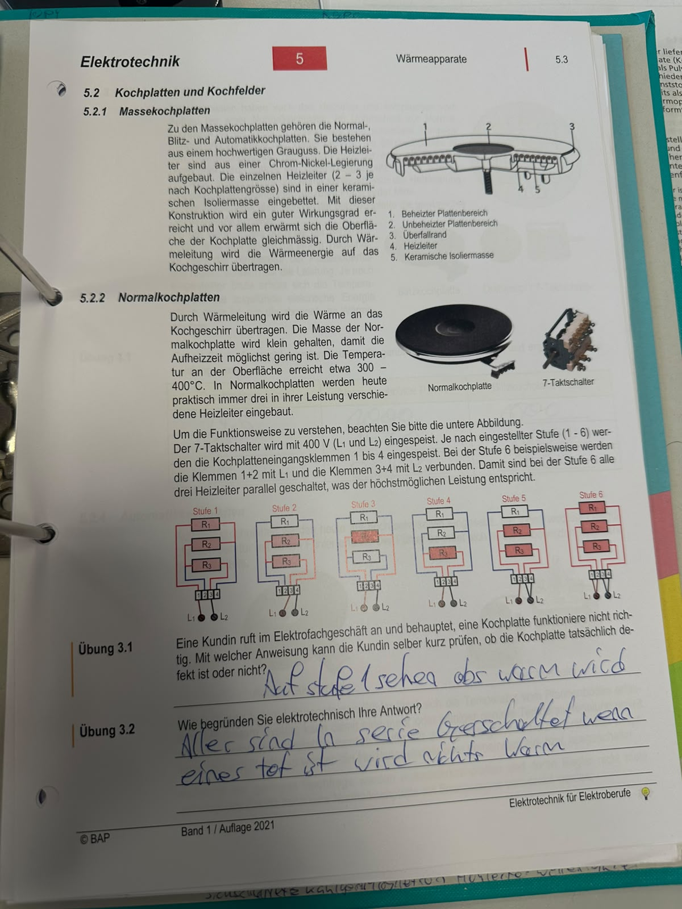
Seite 5.4 · Blitz- und Automatikkochplatten
Seite 5.4 — Blitz- und Automatikkochplatten
5.2.3 Blitzkochplatten
Blitzkochplatten haben auch drei Heizleiter und entsprechen vom Aufbau her einer Normalkochplatte. Im Unterschied zur Normalkochplatte ist die Leistung höher, was eine schnellere Temperaturerhöhung zur Folge hat. Weiter besitzen die Blitzkochplatten einen Überhitzungsschutz (Bimetallkontakt), der auch als Protektor bezeichnet wird. Spricht der Überhitzungsschutz an, so wird ein Heizleiter ausgeschaltet und somit verringert sich die Heizleistung.
Blitzkochplatten erkennt man am roten Punkt in der Mitte.
Mittels Taktschalter lässt sich bei der Blitzkochplatte die gewünschte Leistungsstufe einstellen.
Bei der Normal-, wie auch bei der Blitzkochplatte, lässt sich jedoch mit einem Taktschalter nicht die Temperatur der Plattenoberfläche regeln, sondern nur die Leistung. Je nach eingestellter Stufe erhöht sich die Temperatur, bis die zugeführte elektrische Energie gleich gross ist, wie die abgegebene Wärmeenergie.
Abbildungen: Schaltung mit Protektor, R₁–R₃ und Klemmen 1–4; Blitzkochplatte mit rotem Punkt; Drehknopf / 7-Taktschalter.
Übung 4.1: Geben Sie in der nachfolgenden Tabelle die genormten Durchmesser an und ergänzen Sie die Leistungswerte.
Handschriftlich ausgefüllte Tabelle:
| Durchmesser in cm | Normalkochplatte P in W | Blitzkochplatte P in W |
|---|---|---|
| 14,5 | 1000 | 1500 |
| 18 | 1500 | 2000 |
| 22 | 2000 | 2600 |
5.2.4 Automatikkochplatten
Automatikkochplatten werden heute nur noch selten eingesetzt. Bei ihnen wird die Oberflächentemperatur mit einem Fühler erfasst. Der Fühler befindet sich in der unbeheizten Mittelzone der Kochplatte.
Bildbeschriftungen: Automatikkochplatte; Temperaturregler.
Durch diesen federnd angeordneten Fühler lässt sich die Temperatur vom Pfannenboden erfassen. Mit diesem System kann damit eine mehr oder weniger genaue Temperaturregelung erzielt werden. Automatikkochplatten werden häufig mit zwei gleich grossen Heizwiderständen aufgebaut. Je nach Reglertyp werden die Heizleiter einzeln oder gemeinsam ein- bzw. ausgeschaltet.
Aufgrund der geringen Nachfrage werden Automatikkochplatten und deren Regler nicht mehr gefertigt. Als Ersatz kann eine Normalkochplatte mit Energieregler verwendet werden.
Quellenstatus: Aussagen wie «heute» und «nicht mehr gefertigt» sind der Wortlaut des Lehrmittels, Auflage 2021; keine neu geprüfte Marktübersicht.
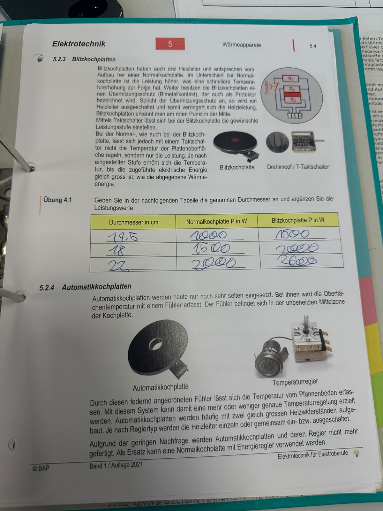
Seite 5.5 · Glaskeramikkochfelder
Seite 5.5 — Glaskeramikkochfelder
5.2.5 Glaskeramikkochfelder
Ceran-Glaskeramik ist der am häufigsten eingesetzte Kochfeldtyp. Er lässt sich besser reinigen als die Massekochplatten. Im kalten Zustand ist das Kochfeld schwarz und bei Erhitzung werden die Strahlungsheizkörper sichtbar (rot).
Glimmlämpchen zeigen an, welche Kochfelder noch über 50 °C warm sind (Restwärmeanzeige). Im nebenstehenden Bild sind die vier Glimmlämpchen in der Mitte vom unteren Bildrand erkennbar.
Die Kochfelder werden durch Strahlungsheizkörper erhitzt. Die Strahlungsheizkörper bestehen aus runden oder ovalen Blechtellern in die, elektrisch und thermisch isoliert, die Heizwendel eingelegt sind.
Quer über dem Strahlungsheizkörper ist bei den meisten Modellen ein Stabausdehnungsfühler als Überhitzungsschutz eingebaut. Ab ca. 550 °C erfolgt durch Unterbrechung des Stromkreises die automatische Abschaltung.
Es werden folgende Arten von Strahlungsheizkörpern unterschieden:
- Einkreis-Strahlungsheizkörper (Energieregler)
- Zweikreis-Strahlungsheizkörper für zwei verschieden grosse Kochzonen.
Bildbeschriftungen: Ceran-Glaskeramik; Zweikreis-Strahlungsheizkörper.
Übung 5.1: Ergänzen Sie in der nachfolgenden Tabelle die passenden Leistungswerte.
| Durchmesser in cm | Leistung in W — Handschrift |
|---|---|
| 14,5 (Einkreis) | 1200 |
| 18 (Einkreis) | 1800 |
| 12/18 (Zweikreis) | 900/1800 |
| 14/21 (Zweikreis) | 1400/2300 |
Abbildung «Glaskeramikkochfeld»: Vier Kochzonen, beschriftet 180 mm, 140/210 mm, 120/180 mm, 145 mm.
Übung 5.2: Welche Leistung nimmt das dargestellte Kochfeld maximal auf? (Übung 5.1)
Handschrift: 8,1 kW.
Redaktioneller Hinweis: So im Foto geschrieben. Die angegebenen maximalen Zonenleistungen ergeben jedoch 1200 + 1800 + 1800 + 2300 = 7100 W = 7,1 kW. Bei Zweikreiszonen wird jeweils der grössere Gesamtwert verwendet, nicht die Summe beider Werte. Die handschriftliche 8,1 wird als Quelle erhalten, aber nicht als richtige Lösung übernommen.
Übung 5.3: Eine Kundin fragt Sie, welche Vorteile ein Glaskeramikkochfeld gegenüber Normalkochplatten besitzt. Was antworten Sie (stichwortartig)?
Handschrift:
- Flach
- Temperaturanzeiger
- Mehr Grössen
- Schneller
- Einfacher zu Putzen
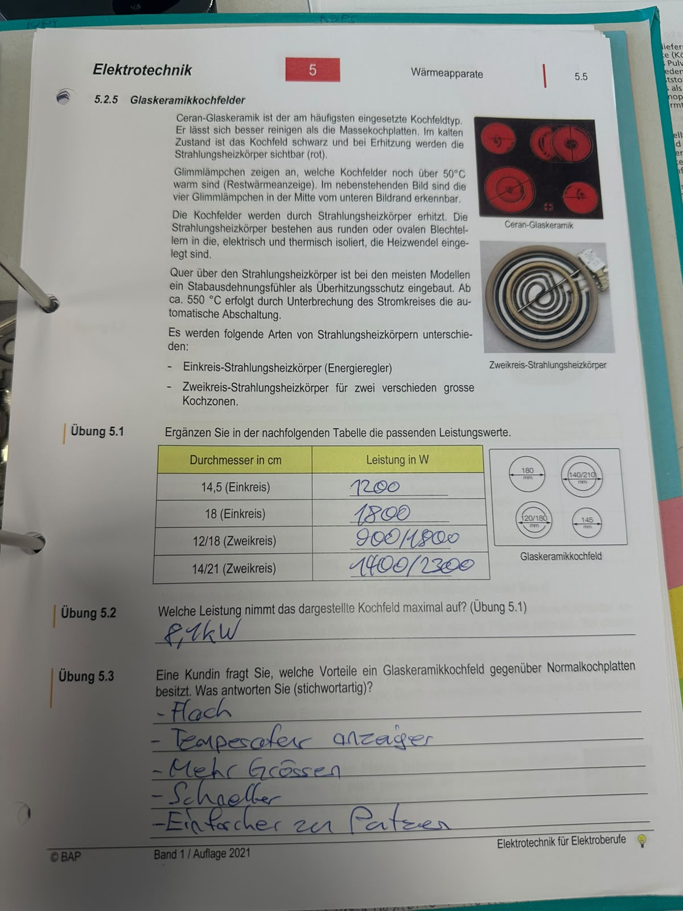
Seite 5.6 · Induktionskochfelder
Seite 5.6 — Induktionskochfelder
5.2.6 Induktionskochfelder
Die herkömmlichen Glaskeramikkochfelder arbeiten mit Heizleitern und übertragen die Wärme durch Wärmeleitung und Wärmestrahlung. Die Kochflächen sind deshalb heiss und tragen ihrerseits zu Verlusten bei.
Beim Induktions-Kochfeld befinden sich unter der Glaskeramikplatte stromdurchflossene Spulen, die über einen elektronischen Frequenzumrichter ein hochfrequentes magnetisches Wechselfeld (ein schnell änderndes Magnetfeld) erzeugen. Dieses Wechselfeld mit einer Frequenz von 25 kHz induziert im ferromagnetischen Topfboden Wirbelströme und starke Ummagnetisierungsverluste (Hystereseverluste), die den Pfannenboden rasch erwärmen.
Da das magnetische Wechselfeld nur im Pfannenboden wirkt, findet die Energieübertragung nur bei vorhandener Pfanne statt. Die Glaskeramikplatte erwärmt sich also nur durch die abgegebene Wärme von der Pfanne. Im Gegensatz zu herkömmlichem Kochgeschirr haben unebene Pfannenböden oder falsche Pfannengrössen keinen grossen Einfluss auf den Wirkungsgrad.
Abbildungsbeschriftungen: Kochgeschirr aus FE; Wirbelströme; stromdurchflossene Spulen; magnetisches Wechselfeld; Frequenzumrichter; 25 kHz; 50 Hz.
Übung 6.1: Eignet sich jede beliebige Pfanne für den Einsatz auf einem Induktionskochfeld?
Handschrift: Nein. Nur Stahl oder Gusseisen Pfanne. Ferromagnetisch.
Vergleichen Sie in der nachfolgenden Tabelle die verschiedenen Systeme.
| System | Vorteile | Nachteile | Energieverbrauch |
|---|---|---|---|
| Massekochplatten | Preisgünstig; einfache Reparatur | Grosse Restwärme; schlechte Regelung; lange Ankochzeiten | 120 % |
| Glaskeramikkochfelder | Pflegeleicht; schnellere Wärmeregelung; kürzere Ankochzeiten | Teurer als Kochplatten; aufwändigere Reparaturen | 100 % |
| Induktionskochfelder | «kaltes» Kochfeld; kein Einbrennen; schnelle Reinigung; sehr kurze Aufwärmung | Teures System; ferromagnetisches Geschirr notwendig | 80 % |
Vollflächen-Induktions-Kochfelder und Flexzonen-Beheizung (Power Move)
Neben den herkömmlichen Systemen werden heute auch Vollflächen-Induktions-Kochfelder angeboten, die nur gerade dort die Spulen einschalten, wo sich die Pfannen befinden. Bei diesem System gibt es viele kleine Spulen unterhalb der Glaskeramik.
Vollflächen-Induktions-Kochfelder lassen sich durch Knopfdruck in drei Heizzonen unterteilen. Vorne wird dadurch ein starkes Wechselfeld erzeugt, was eine starke Hitze erzeugt, im mittleren, bzw. im hinteren Teil wird die Stärke geringer. Durch verschieben der Pfanne passt die Elektronik automatisch die zugeführte Energie an.
Brat- und Kochsensor
Bei diesem System stellt ein an der Pfanne befestigter Sensor eine Bluetooth-Verbindung zur Elektronik her. Er misst permanent die Pfannentemperatur und steuert damit den Kochvorgang. Die Kochzonen werden nur dann aktiviert, wenn dies notwendig ist.
Quellenstatus: 25 kHz und 120/100/80 % sind Lehrmittelangaben. Die Prozentwerte sind relative Verbrauchswerte mit Glaskeramik = 100 %, keine Wirkungsgrade. «Kaltes» Kochfeld bedeutet keine direkte Widerstandsheizung der Platte; durch den heissen Topf entsteht trotzdem Restwärme.
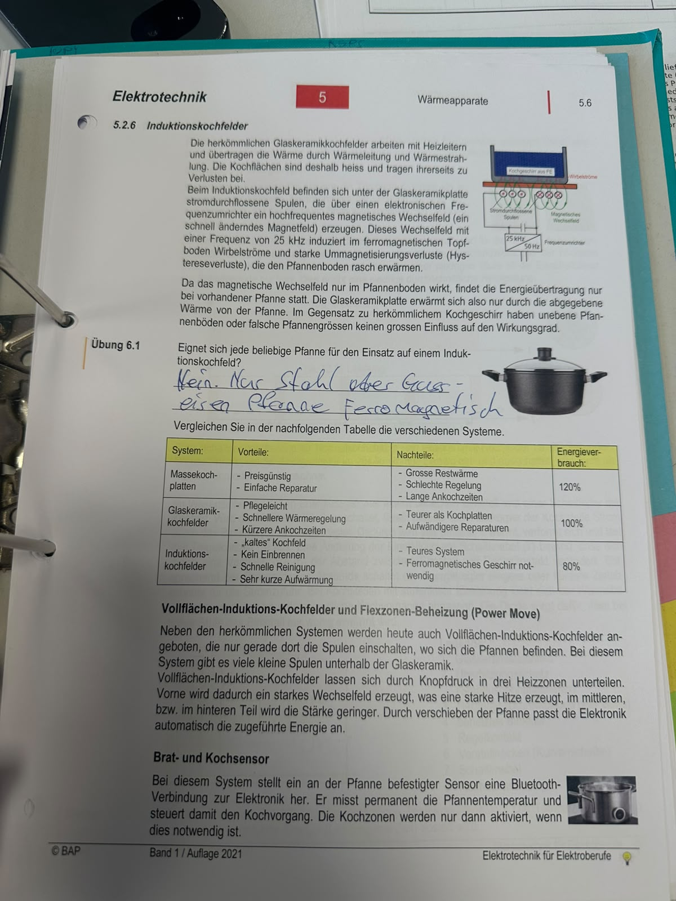
Seite 5.7 · Energieregler
Seite 5.7 — Energieregler
5.2.7 Energieregler
Heute werden Glaskeramik- und Induktionskochfelder mittels Energieregler gesteuert. Dabei wird zwischen mechanischen und elektronischen Energiereglern unterschieden.
Mechanische Energieregler
Mechanische Energieregler steuern die Temperatur, indem sie in längeren oder kürzeren Zeitabschnitten die Leistung zu- und wieder abschalten. Auf der höchsten Stufe wird kontinuierlich Leistung zugeführt.
Betrachten Sie das P-t-Diagramm für die höchste Leistungsstufe und für die Stufe 1. Je nach eingestellter Leistungsstufe ergeben sich längere oder kürzere Einschaltzeiten. Bei der höchsten Stufe wird die Heizwicklung nicht abgeschaltet. Bei einer niedrigen Stufe ist die Einschaltdauer pro Schaltperiode nur kurz. Dies ergibt eine niedrige durchschnittliche Heizleistung.
Diagramme:
- Oben: P-t-Diagramm «100 % Leistung», konstante Leistung auf Pmax; waagerechte Zeitachse t, senkrechte Leistungsachse P.
- Unten: P-t-Diagramm «ca. 13 % Leistung» mit vier kurzen Pulsen bis Pmax. Die mittlere Leistung P ist als tiefe gestrichelte Linie eingezeichnet. Jede Wiederholung ist «Schaltperiode T» beschriftet. Drehknopf rechts jeweils zur Stufe dargestellt.
Eine Schaltperiode beträgt für Normalkochplatten und Glaskeramik-Kochfelder ca. 20 Sekunden. Dieses Prinzip, wo der Energieregler im 20s-Rhythmus ständig ein- und ausschaltet, wird auch als Pulsweitenmodulation bezeichnet.
Im Wesentlichen bestehen Energieregler aus einem beheizten Bimetall und einer Schaltfeder mit Kontakt. Wird der Heizleiter (3) eingeschaltet fliesst parallel zum Heizkörper der Kochstelle Strom durch das Bimetall (4) im Energieregler. Dadurch wird das Bimetall erwärmt, verformt sich und löst den Regelkontakt (5) aus. Eine Änderung der Einstellung am Schaltknebel (7) bewirkt, dass sich durch eine Verstellnocke (6) der Abstand zwischen Bimetall und Regelkontakt verändert. Entsprechend der Grösse dieses Abstands schaltet der Energieregler längere oder kürzere Zeitabschnitte für die Stromzufuhr. Bei Kochstellen mit stufenloser Einstellung lässt sich der Wärmebedarf besonders gut an unterschiedliche Kochvorgänge anpassen. Die Diode sorgt dafür, dass bei hoher Stufe das Bimetall nur wenig erwärmt wird.
Legende zur Schaltung:
- Glaskeramikkochfeld
- Überhitzungsschutz (Stabausdehnungsfühler)
- Heizleiter (Drahtwicklung oder Band)
- beheiztes Bimetall
- Regelkontakt
- Verstellnocken (Kurvenscheibe)
- Schaltknebel
- Restwärmeanzeige
Merke (gedruckt, rot): Mit dem Energieregler erfolgt keine eigentliche Temperaturregelung! Die Temperatur verändert sich, weil die zugeführte Energie (Leistung mal Zeit) dosiert wird.
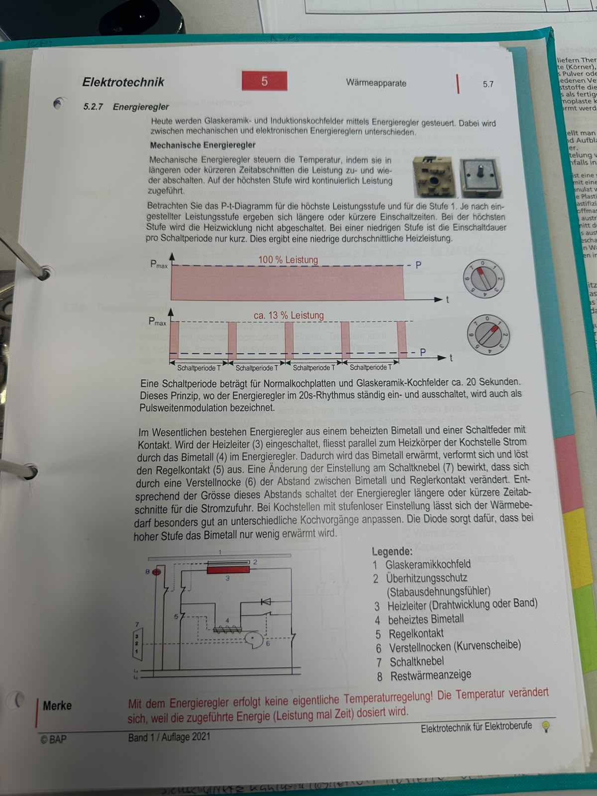
Seite 5.8 · Elektronische Energieregler und Temperaturregler
Seite 5.8 — Elektronische Energieregler und Temperaturregler
Elektronische Energieregler
Elektronische Energieregler enthalten einen Mikroprozessor, womit der Hersteller in der Lage ist, eine viel feinere Unterteilung der Leistungsstufen zu programmieren. Die verschiedenen Ein- und Ausschaltzeiten, sowie die Schaltperiode werden je nach System verschieden programmiert.
Für den Kunden bedeutet dies, dass eine absolut stufenlose Regelung des Kochfeldes möglich ist und dass im niedrigsten Einstellbereich die Heizleistung tiefer ist als mit einem mechanischen Energieregler. Dies hat unbestrittene Vorteile beim Warmhalten von Speisen.
Übung 8.1: Rechts sind zwei verschiedene Strahlungsheizkörper für Glaskeramik-Kochfelder dargestellt. Worauf muss bei der Auswahl des Energiereglers geachtet werden?
Handschrift: Für den Zweikreisstrahlungsheizkörper braucht es einen Zweikreisenergieregler.
5.2.8 Temperaturregler
Temperaturregler sind heute nur noch selten, d. h. im Zusammenhang mit Automatikkochplatten im Einsatz. Trotzdem lohnt es sich, das Prinzip zu verstehen, da es auch bei Wassererwärmern (Boiler) angewendet wird.
Der Temperatursensor (Wärmefühler) (2) besteht aus Fühler, Kapillarrohr, Membrane und Füllmedium. Mit dem Fühler erwärmt sich auch das Füllmedium, meist wärmefestes Öl, im Kapillarrohr und dehnt sich aus. Dadurch wird der Druck im geschlossenen System erhöht. Erreicht der Druck einen bestimmten Wert, betätigt die Membran einen Schnappschalter (Regelkontakt) (5), der den Stromkreis öffnet oder schliesst.
Während des Aufheizvorgangs werden zuerst der eine und dann der andere Heizkörper (1) abgeschaltet. Beim Kochfortgang wird durch wechselndes Ein- und Ausschalten der Leistung die eingestellte Temperatur geregelt. Abhängig vom Leistungsbedarf wird ein Heizkörper dazu geschaltet oder sogar beide zusammen.
Legende:
- Heizkörper
- Wärmefühler
- Kapillarrohr
- Ausdehnungsmembrane
- Regelkontakt
- Schalthebel
- Einstellspindel
- Abschaltkontakte
- Schalterknebel
Schaltbildbeschreibung: Fühler in der Mitte der Kochplatte, Kapillarrohr zur Membran, mechanische Kopplung an den Regelkontakt; Einstellspindel vom Drehknebel; zwei Heizkörperzweige und Abschaltkontakte, eingespeist über L₁/L₂. Als Funktionsprinzip übernommen, nicht als Anschlussplan rekonstruiert.
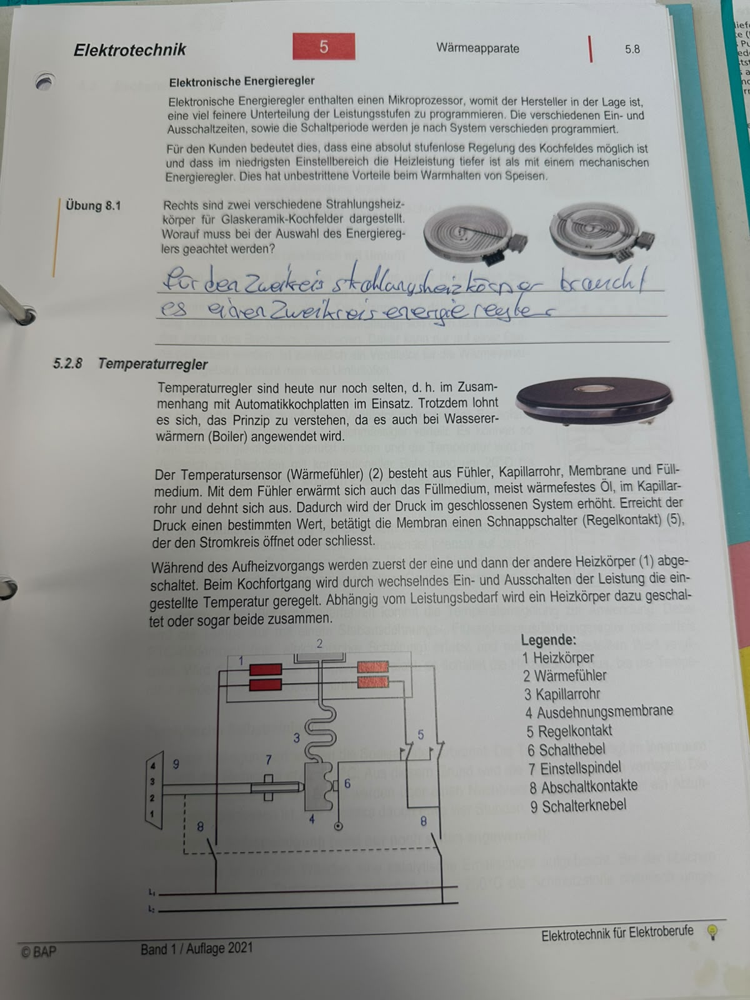
Seite 5.9 · Backofen
Seite 5.9 — Backofen
5.3 Backofen
Jede moderne Küche besitzt einen Backofen, dessen wärmeisolierter Innenraum mit Elektrizität beheizt wird. Je nach Bauart kann ein Backofen auf eine oder mehrere Arten betrieben werden. Entscheidend ist dabei die Anzahl und Lage der Heizwicklungen.
Jeder Backofen besitzt die Beheizungsarten Ober- und Unterhitze, Umluft, Heissluft und Grillbeheizung. Weitere Beheizungsarten werden durch Kombination oder Abwandlung erzielt.
Übung 9.1: Welche Anschlussleistung besitzen heutige Backöfen?
Handschrift: 3–4 kW in Küche.
Ober- und Unterhitze (zusätzlich mit Umluft)
Werden Decke und Boden des Innenraums durch Heizspiralen beheizt, so spricht man von Ober- und Unterhitze. Decke und Boden sind getrennt voneinander schaltbar. Die Wärme wird dabei durch Strahlung und natürliche Konvektion (Luftströmung) von oben bzw. unten in das Innere des Backofens übertragen. Daher kann nur auf einer Ebene gebacken werden. Ist zusätzlich ein Ventilator für die Wärmeverteilung eingebaut, spricht man vom Umluftofen.
Handschrift bei der Skizze: Heizschlange[n] … [nachfolgendes Wort unklar].
Skizze: Obere und untere Heizkörper; Ventilator im hinteren Bereich.
Heissluft
Im Heissluftofen wird durch einen Ventilator im Innern des Backofens die erhitzte Luft schneller und gleichmässiger verteilt. Es können so zwei Ebenen gleichzeitig genutzt werden und die Temperatur wird im Vergleich zu Backöfen mit konventioneller Beheizung um 20 °C bis 30 °C niedriger eingestellt, wodurch Energie eingespart wird.
Skizze: Luftströmungen um einen rückwärtigen Ventilator.
Grill
Um eine intensive Bräunung von Gegrilltem zu erreichen, strahlt eine an der Decke montierte unverdeckte Heizwendel intensiv auf den Innenraum herunter. Bei einigen Geräten lässt sich hierbei auch der Umluftbetrieb zuschalten, um eine schnellere Garung zu erreichen.
Bei jedem dieser Beheizungsverfahren kommt die Temperaturregelung zur Anwendung. Dabei wird die Temperatur mit einem Stabausdehnungs-, Flüssigkeitsausdehnungsregler oder mittels PTC-Widerstand (inkl. elektronischer Schaltung) erfasst und mit dem eingestellten Wert verglichen. Wird die eingestellte Temperatur erreicht, so schaltet die Heizwicklung aus, bis die Temperatur wieder unter den Sollwert sinkt.
Pyrolytische Selbstreinigung
Bei dieser Reinigungsart werden die Speisereste verbrannt. Die Temperatur beträgt im Innenraum während der Reinigung etwa 500 °C. Aus diesem Grund wird die Türe automatisch verriegelt. Die Verbrennungsgase und der Staub werden über einen Nachbrenner geleitet, der über ein Abluftsystem angeschlossen ist. Der Prozess dauert etwa vier Stunden.
Katalytische Selbstreinigung (wird nur noch selten angewendet)
Im Backraum ist auf den Wänden eine katalytische Emailschicht aufgebracht. Bei der üblichen Nutzung werden bei Temperaturen zwischen 150–250 °C die Schmutzstoffe chemisch umgewandelt und lösen sich von den Wänden.
Quellenstatus: Ausstattung, Leistungswerte, Anzahl Ebenen und Reinigungsdauer sind Aussagen dieses Lehrmittels bzw. der Handschrift. Sie sind keine allgemeingültigen Angaben für jedes heutige Gerät.
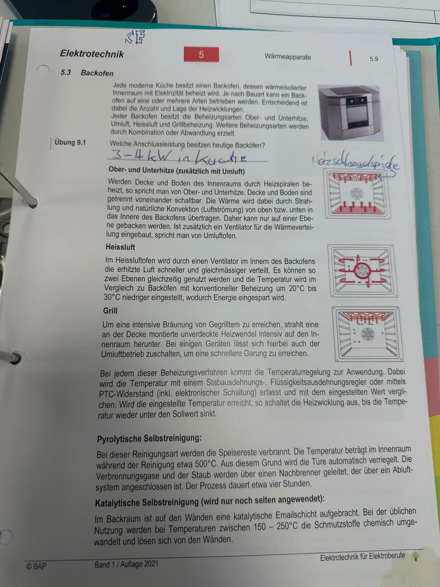
Seite 5.10 · Steamer
Seite 5.10 — Steamer
5.4 Steamer
Als Steamer wird ein Garungsgerät bezeichnet, das zusätzlich zur Funktion eines Umluft-Backofens auch Heissdampf erzeugt. Das Gerät eignet sich zum schonenden und schnellen Garen (Dämpfen) von Gemüse, Kartoffeln usw.
Ein Steamer vereinigt die Funktionen eines Dämpfers, in dem Gargut in gesättigter Dampfatmosphäre gegart wird und eines Umluftofens, bei dem das Garen mit Umluft erfolgt.
Da bei den Geräten Temperatur und Feuchte veränderbar sind, erlauben sie eine volle Steuerung des Garklimas in einem weiten Bereich. Ausserdem kann aufgrund der verhältnismässig hohen Umluftgeschwindigkeit des Lüfters und der Kondensation des Dampfes eine vergleichsweise kurze Gardauer und somit schonende Zubereitung der Lebensmittel erzielt werden.
Übung 10.1: Sie empfehlen einer Kundin, dass sie sich anstelle eines herkömmlichen Backofens besser einen Steamer kaufen sollte. Sie begründen dies mit der Gemüsezubereitung. Was ist der Vorteil eines Steamers, gegenüber einer mit Wasser gefüllten Pfanne?
Handschrift: Die Nährstoff- und Vitaminverluste sind deutlich geringer.
Eigenschaften
In einem Steamer können gleichzeitig unterschiedliche Garprodukte in verschiedenen Behältern ohne Geschmacksübertragung gegart werden.
Steamer verfügen in der Regel über folgende Betriebsarten:
- Dämpfen (Garen unter wasserdampfgesättigter Garatmosphäre) bei typisch 100 °C.
- Heissluft (Garen unter Heissluftatmosphäre ohne zusätzliche Dampfeinspeisung) mit je nach Hersteller zwischen 30 °C und 300 °C.
Die Mischung aus den genannten Betriebsarten und weitere Spezialbetriebsarten sind ebenfalls verfügbar.
Technik
Der Dampf kann mit zwei verschiedenen Systemen hergestellt werden:
- Beim Boilersystem wird der Dampf aus einem vom Garraum getrennten Dampferzeuger generiert und bei Bedarf in den Garraum geleitet.
- Beim Einspritzsystem wird der Dampf durch den im Kern des rotierenden Lüfterrads befindlichen Heizkörpers direkt im Garraum erzeugt.
Steamer benötigen einen Wasseranschluss oder einen separaten Speisewassertank sowie einen Wasserablauf. Elektrisch beheizte Geräte erfordern zum Teil einen Drehstromanschluss.
In der Regel können in Steamern Garprogramme mit mehreren Prozessschritten eingegeben werden. Diese können dann auch in einem elektronischen Kochbuch gespeichert werden. Moderne Geräte verfügen sogar über einen PC-Anschluss.
Abbildungen: Lebensmittel auf mehreren Einschüben; Einbaugerät mit geöffnetem Garraum.
Quellenstatus: Die Definition auf dieser Seite beschreibt einen Kombi-Steamer. Reine Dampfgarer besitzen nicht zwingend Heissluft. Wasserablauf, Temperaturbereich und Anschluss hängen vom Gerät ab.
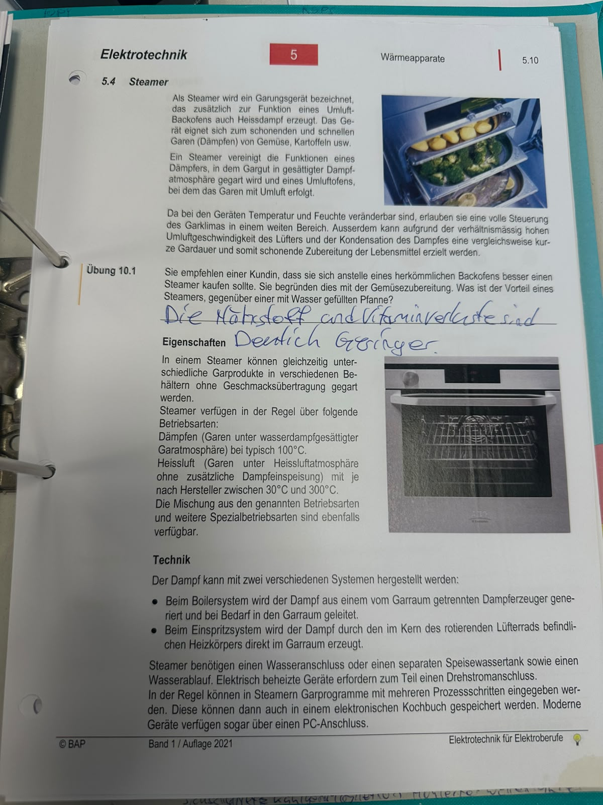
Seite 5.11 · Mikrowellengerät
Seite 5.11 — Mikrowellengerät
5.5 Mikrowellengerät
Bei einem Mikrowellengerät wird Hitze nicht von aussen zugeführt, sondern direkt im Essen erzeugt. Wie es der Name bereits andeutet, werden Mikrowellen, dies sind elektromagnetische Wellen (wie Licht, Röntgenstrahlen, UV-Strahlen usw.) verwendet. Mikrowellen haben im Unterschied zu den anderen elektromagnetischen Wellen eine besonders hohe Wirkung auf Wassermoleküle. Da praktisch alle Nahrungsmittel einen gewissen Wassergehalt besitzen, liegt hier der Ansatz für die Funktionsweise.
Wassermoleküle (H₂O) bestehen bekanntlich aus einem Sauerstoff- und zwei Wasserstoffatomen. Da Elektronen vom Sauerstoffatom stärker angezogen werden als von Wasserstoffatomen, wirkt das Sauerstoffatom nach aussen negativ und die beiden Wasserstoffatome positiv. Das H₂O-Molekül besitzt damit vereinfacht ausgedrückt einen Plus- und einen Minuspol.
Da Mikrowellen (grün) ständig die Richtung ändern (positive und negative Halbwelle), richten sich die Moleküle in den Nahrungsmitteln einmal in die eine, dann in die andere Richtung aus. Bei den handelsüblichen Geräten wechselt die Richtung milliardenfach in einer Sekunde. Dadurch reiben sich die Moleküle mit den Nachbarmolekülen, was schlussendlich die Wärme erzeugt.
Die elektromagnetischen Wellen werden von einem Magnetron erzeugt und gelangen über einen Hohlleiter in den Garraum.
Der Wellenrührer verteilt die Mikrowellen, welche von den Metallwänden reflektiert werden im Garraum.
Molekülskizze: H₂O mit O als negativer und den H-Atomen als positiver Seite; zwei entgegengesetzte Ausrichtungen zum wechselnden elektrischen Feld.
Geräteskizze — Beschriftungen: Türverriegelung; Sicherheitsschalter (zweimal); Wellenrührer; Hohlleiter; Magnetron; Garraum; Netzgerät; Kühlgerät.
Übung 11.1: Welches Geschirr kann für Mikrowellengeräte verwendet werden?
Handschrift: Glas, Kunststoff, Keramik.
Übung 11.2: Mit welcher Frequenz arbeiten die Mikrowellengeräte und wie tief dringen die Mikrowellen in die Speisen ein?
Handschrift: 2450 MHz, 6 cm. [Die Ziffer der Tiefe sieht nach «6» aus; wegen der Handschrift nicht völlig eindeutig.]
Übung 11.3: Warum kann mit einem reinen Mikrowellengerät nicht gebacken werden?
Handschrift: Weil Wasser nur bis 100 °C erhitzt wird in dem Umstand. [Schreibweise geglättet; letzter Ausdruck ungewöhnlich, aber so lesbar.]
Redaktionelle Abgrenzung: Die Antworten sind als Handschrift dokumentiert. Die Eindringtiefe ist keine feste allgemeingültige Zahl; sie hängt vom Lebensmittel ab. Für Bräunung/Kruste fehlt einer reinen Mikrowelle typischerweise die intensive trockene Oberflächenbeheizung. «Nicht backen können» und «immer höchstens 100 °C» sind zu pauschal. Geschirr muss ausdrücklich mikrowellengeeignet sein; die Materialbezeichnung allein reicht nicht.
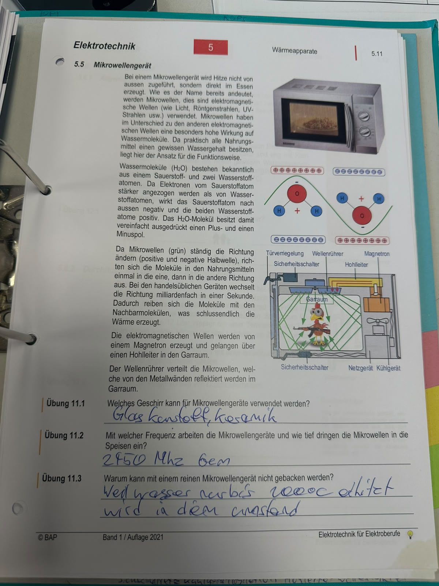
Was wurde gemacht – und warum?
Die elf vom Nutzer bereitgestellten Fotos wurden im privaten Obsidian-Vault unverändert archiviert und mit SHA-256 geprüft. Diese Seite stellt zusätzlich seitennummerierte Originalkopien für den Abgleich bereit. Die Transkription wurde aus den Fotos gelesen; Zeilenumbrüche und Silbentrennungen wurden normalisiert, Handschrift behutsam geglättet. Unklare Lesungen bleiben sichtbar.
Die Zusammenfassung erklärt die für das Lernen wichtigen Zusammenhänge. Fehlerkorrekturen ersetzen keine Originalantwort: 8,1 kW bleibt im Transkript stehen, die nachvollziehbare Rechnung ergibt 7,1 kW. Angaben wie 25 kHz, 20 s, 500 °C und die relativen Verbrauchswerte werden als Lehrmittelwerte gekennzeichnet. Die Zwischenstufen des 7-Taktschalters wurden nicht aus einem unscharfen Foto erfunden.
Tabellen und zehn Prinzipdiagramme wurden neu gesetzt, damit sie lesbar und vergrösserbar bleiben. Es handelt sich um eine Theorie-Referenz, nicht um ein Quiz oder einen offiziellen LAP-Prüfungskatalog. Das vollständige Bearbeitungsprotokoll, Einzeltranskripte und Originalmanifest liegen im Vault.
Quelle der elf Seiten: BAP, Elektrotechnik für Elektroberufe, Band 1, Auflage 2021, Kapitel 5, S. 5.1–5.11. Fotos vom Nutzer am 30.10.2026 bereitgestellt. Ergänzende Quellen sind direkt bei den Erläuterungen verlinkt.